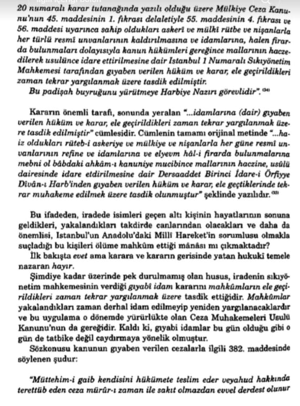
bkz. Murat Bardakçı, Şahbaba
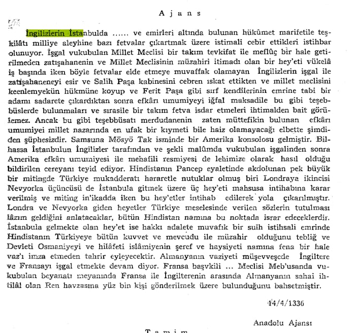
📚 Kazım Karabekir, Istiklâl Harbimiz, Istanbul, 1988, sayfa 595.
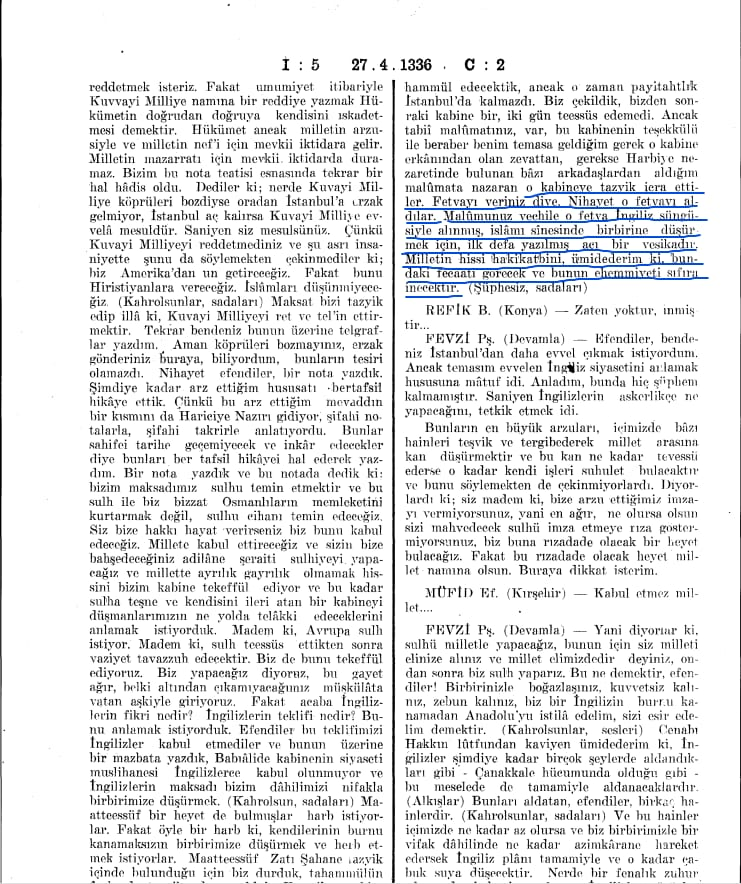
📚 Türkiye Büyük Millet Meclisi Zabıt Ceridesi, Dönem 1, Cild 2, Içtima 5, 27 Nisan 1920
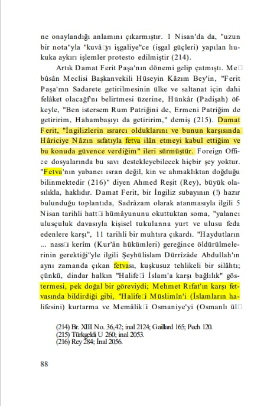
📚 Gotthard_Jaeschke, Kurtuluş_Savaşında İngiliz_Belgeleri, s.88
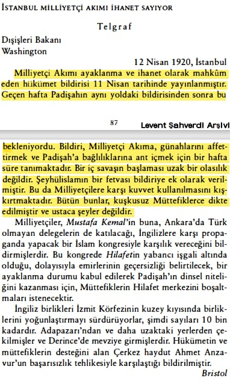
📌 *ABD Dışişleri Bakanının İdam fetvalarının Müttefik devletlerce dikte edilmiş ve akıl dışı olduğunu söylemesi.* 📚 Orhan Duru, Amerikan Gizli Belgeleriyle Türkiye’nin Kurtuluş Yılları, s.87-88
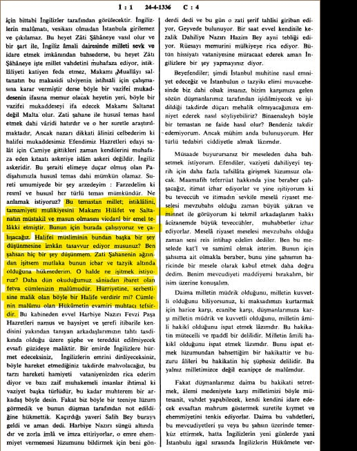
📚 Türkiye Büyük Millet Meclisi Zabıt Ceridesi, Dönem 1, Cild 4, Içtima 1, 24 Nisan 1920
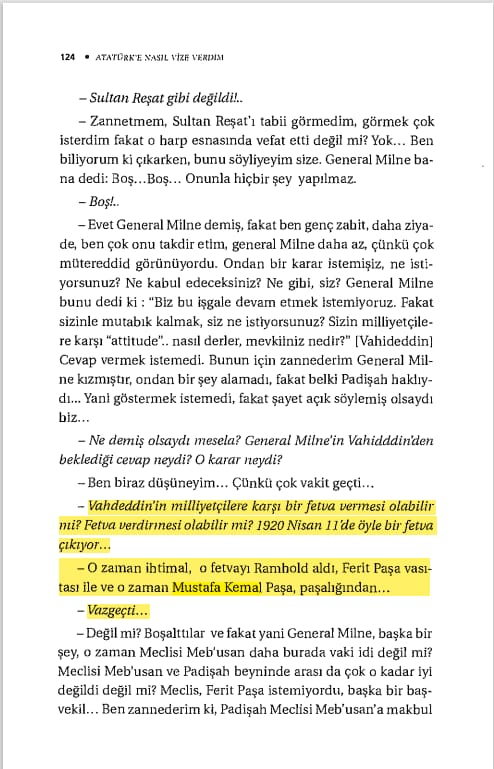
📚 Yüzbaşı Bennet, Atatürke Nasıl Vize verdim, s.124

📚 Ahmet İzzet Paşa, Feryadım, C.2, s.80
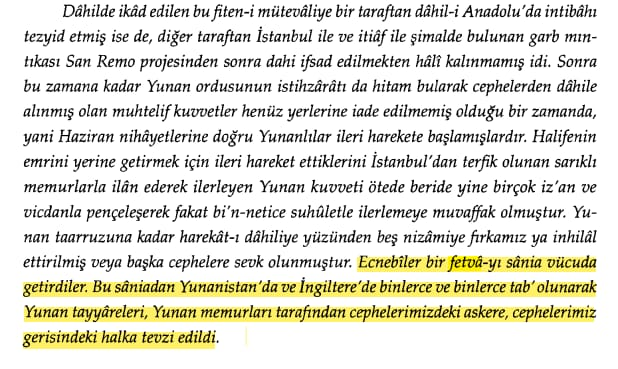
📌 *Mustafa Kemalin Davet ettiği heyetten olan ve Kurtuluş Savaşında büyük önemi olan Neşet beyin İdam Fetvası Hakkında Beyanı.* 📚 Ahmet İzzet Paşa, Feryadım, C.2, s.323
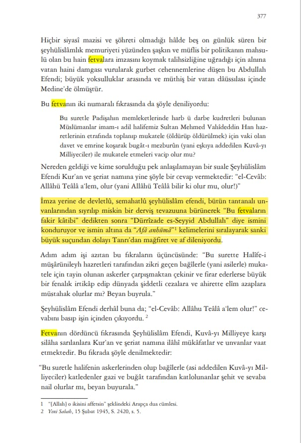
📌 *Dürrizade Abdullahın Baskı altında ve pişmanlığını İmzasında Göstermesi.* 📚 Tarık Mümtaz Göztepe, Mütareke Günleri, s.377
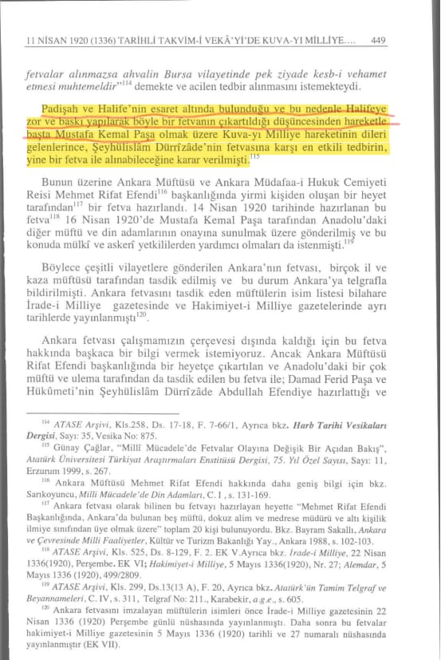
📚 Osman Akandere, 11 Nisan 1920 (1336) Tarihli Takvim-i Vekâyi'de Kuva-yı Milliye Aleyhinde Yayınlanan Kararlar, s. 449
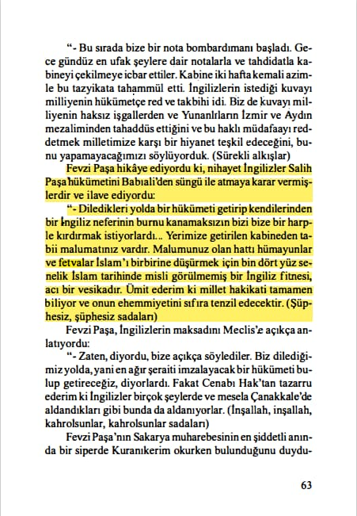
📚 Yunus Nadi, Birinci Büyük Millet Meclisi, s.63
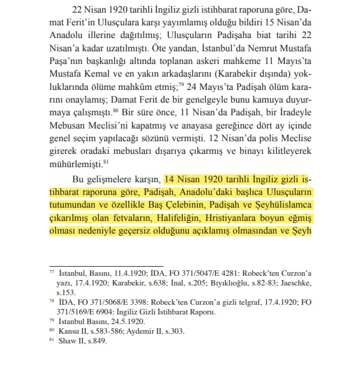
📚 Salahi Sonyel, Gizli Belgelerde Mustafa Kemal Vahdettin ve Kurtuluş, s.94
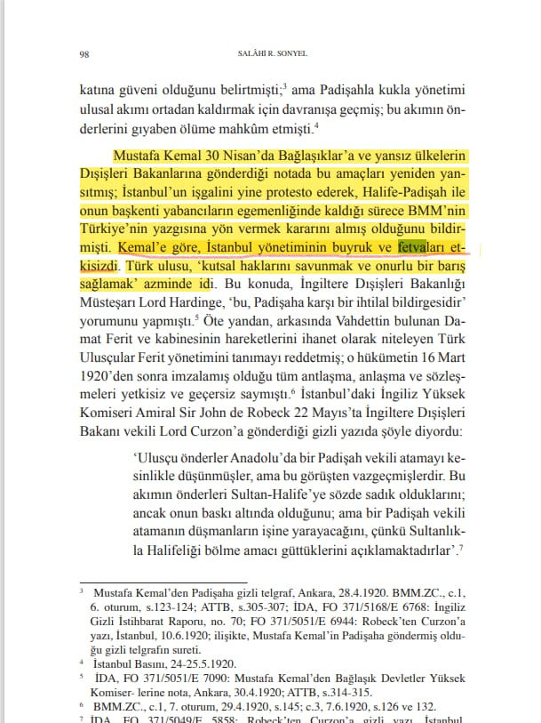
📌 *Kemale göre, İstanbul yönetiminin buyruk ve fetvaları etkisizdi.* 📚 Salahi Sonyel, Gizli Belgelerde Mustafa Kemal Vahdettin ve Kurtuluş, s.98
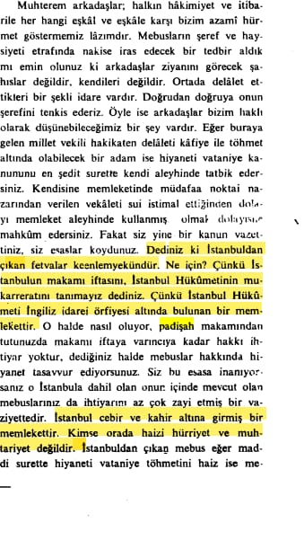
📌 *Saruhan Milletvekili Refik Şevket Beyin Meclis kürsüsündeki İtiraf niteliğindeki sözleri.* 📚 Türkiye Büyük Millet Meclisi Zabıt Ceridesi, Dönem 1, Cild 2, Içtima 13, sayfa 14, 9.5.1336
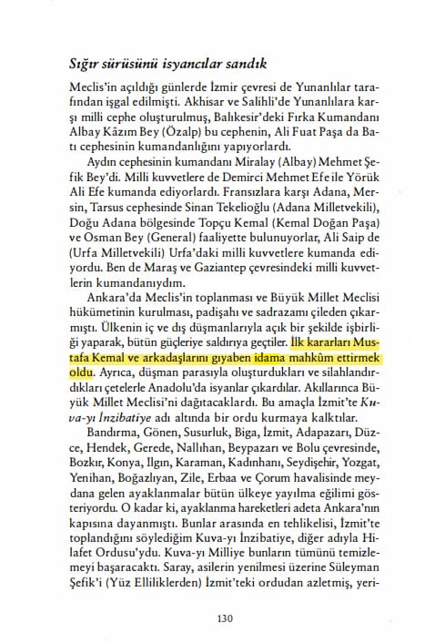
📌 *Çıkan Fetva İdam kararı değil gıyaben idam kararıdır yakalandıkları takdirde cezaları için tekrar mahkeme kurulacaktı.* 📚 Hulusi Turgut, Atatürk’ün Sırdaşı Kılıç Ali’nin Anıları, s.130
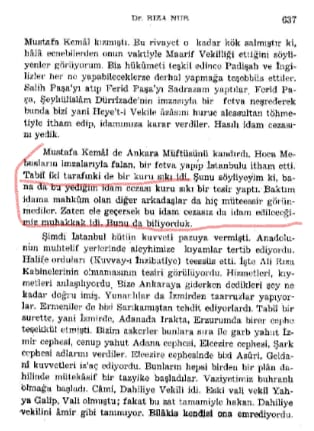
📚 Dr. Rıza Nur, Hayat Ve Hatıratım, C.3, s.637
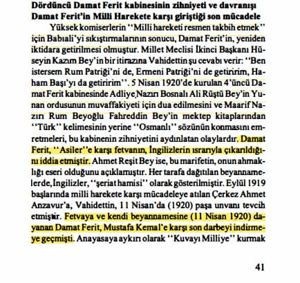